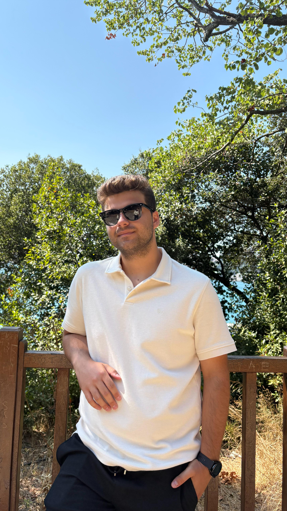

Ömer Asaf Ak
Developer, Designer and Founder of Marki Corp.

Hi, I'm Ömer Asaf. I'm studying Computer Programming at Istanbul University, but I don't really like defining myself just as "someone who writes code." My thing is combining the technical side (software) with aesthetics (design). That's exactly where the "whyasaf" identity comes from; the effort to turn something functional into a visually appealing, usable product.
At school, I dive into the math behind the work by focusing on areas like Machine Learning and Systems Analysis. For me, a project just "working" isn't enough; its architecture and backend need to be built smartly and efficiently. I'm the kind of person who likes to solve the system on paper before even starting to write the code.
Creating coded solutions to real-life problems is what I love most. For example, when I noticed the difficulties developers face while reading technical English documentation, I started developing CodeVocab AI. This project is an end-to-end platform I designed and coded myself, aiming to overcome this language barrier using Natural Language Processing (NLP).
Of course, I don't spend all my time staring at a terminal screen. I'm a huge Formula 1 fan. I run a project called Kaçış Alanı F1, where I design and share race results, qualifying (pole) sessions, and current news using my own visual language. Taking data and turning it into a readable, aesthetic infographic is one of the things I enjoy most in Affinity Designer.
To gather all these different interests in one place, I founded the Marki Corp. brand. You can think of it as my "umbrella of creativity and technology." My software development projects, graphic design work, and even my music production where I experiment with Techno/Lofi/Rap genres (Marki Music)... They all live under this roof.
In short; I'm not a standard developer who just codes a given task and moves on. I'm a digital product developer who creates his own projects from scratch, designs the interface pixel by pixel, and builds the backend on solid foundations.
Insights by Ömer Asaf Ak
"Geleceği algoritmalarla tahmin etmiyorum; onu estetikle baştan tasarlıyorum."
"Yazılım dünyasında en büyük engel dil değil, vizyon eksikliğidir."